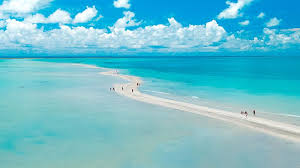

Praia de Antunes, Maragogi
A Praia de Antunes é um dos recantos do extremo norte do Estado, quase na divisa com Pernambuco. A natureza explode em cores dignas do Caribe. A Praia de Antunes está ao lado de Barra Grande, é uma das praias mais bonitas de Alagoas, no extremo norte do litoral do estado. Antunes faz parte do município de Maragogi e está entre as praias do Xaréu e de Barra Grande. Areias branquinhas, mar azul quase transparente e coqueiros fazem o cenário dessa praia paradisíaca. Parece um sonho. Outra característica da Praia de Antunes são as conchas na beira do mar, que com o passar do tempo vão sendo trituradas naturalmente e viram pó, misturando-se à areia do mar.
O que fazer em Atunes?
Em Antunes você pode alugar um caiaque ou um stand up paddle e remar no mar calmo de águas transparentes. Não se assuste se alguns peixes ou tartarugas-marinhas passarem debaixo de você. Outro atrativo são as piscinas naturais, aliás, elas estão espalhadas por praticamente todo o litoral alagoano, e todas são dignas de uma visita, não menospreze nenhuma e explore-as em todas as praias que você visitar.
Em Antunes é possível ver os bancos de areia saindo do mar e se transformando em um verdadeiro e encantador corredor mar adentro, como a Ponta de Corumbau. Esse corredor de areia tem aproximadamente 3 km de extensão. Ali a água do mar fica no joelho e diversos peixes passarão entre suas pernas.